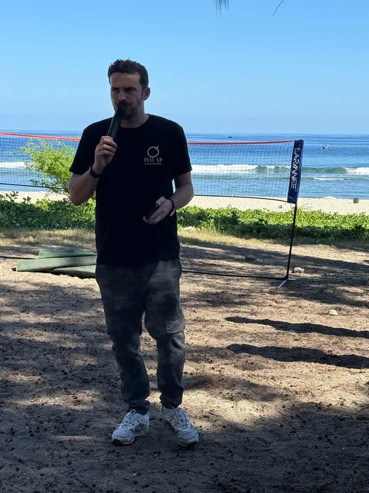

Anniversaire d'adulte : que faire des enfants des invités ?
Vous fêtez vos 40 ans, vous avez invité trente amis, et au fil des réponses une évidence apparaît : il y aura douze enfants. Les laisser courir entre les tables ? Demander aux parents de se relayer ? Il existe une troisième voie, et elle coûte moins cher qu'on ne l'imagine quand on la compare à une soirée gâchée.
Le piège classique : « ils joueront entre eux »
Ils joueront entre eux… vingt minutes. Ensuite, un enfant de 4 ans et un de 10 ans n'ont plus rien à se dire, le petit vient chercher sa mère, le grand s'ennuie sur un téléphone, et les parents mangent froid à tour de rôle. Ce n'est pas un manque d'organisation de votre part : c'est juste que des enfants d'âges différents n'ont pas la même fête en tête.
Option 1 : le kit maison, jusqu'à cinq enfants
Une table basse avec coloriages, gommettes, pâte à modeler et deux jeux de société, un coin coussins avec quelques livres, et un adulte désigné pour un « tour » de vingt minutes à chaque heure. Ça fonctionne pour un petit groupe calme, un après-midi. Ça ne fonctionne plus le soir, ni avec plus de cinq enfants.
Option 2 : un animateur dédié, de six à quinze enfants
Un animateur professionnel arrive avec son matériel, installe un espace à l'écart de la musique, et enchaîne un atelier manuel, un jeu collectif, le maquillage, puis un retour au calme. Pendant ce temps, les parents… sont vos invités, pleinement. C'est la formule que nous proposons le plus souvent pour les anniversaires d'adultes à La Réunion, sur quatre à six heures.
Option 3 : deux animateurs et un coin calme, au-delà de quinze
Quand la fête est grande, l'espace enfants devient une petite fête dans la fête : deux animateurs, des ateliers en parallèle, une chasse au trésor dans le jardin, et un coin calme avec veilleuse pour les petits qui s'endorment vers 21 h pendant que leurs parents dansent.
Ce qui plaît le plus aux enfants d'invités
- Un atelier qui a un rapport avec la fête : une carte géante pour la personne fêtée, que tous les enfants décorent et offrent au moment du gâteau. Succès garanti, larmes des grands-parents incluses.
- Les jeux lontan : course en sac et tir à la corde finissent toujours par attirer les adultes.
- Le maquillage : à faire tôt, pour les photos.
- Un vrai rôle : apporter le gâteau, lancer le compte à rebours des bougies. Les enfants aiment être utiles.
Et le budget ?
Il dépend du nombre d'enfants, de la durée et du lieu : nous établissons un devis en 24 h, avec le prix HT, la TVA à 8,5 % et le TTC. Pour comparer, pensez à ce que coûte un traiteur pour trente personnes : l'animateur est le poste qui garantit que ce repas sera réellement savouré.
Dites-nous combien d'enfants, quels âges et à quelle heure avec le formulaire de demande, ou directement sur WhatsApp. Et joyeux anniversaire en avance.
Un espace enfants pour votre fête ?
Racontez-nous votre événement en deux minutes : Romain vous rappelle avec un programme et un devis clair, en 24 h.
💬 WhatsAppPréparer ma demande
Romain Capdepont est le fondateur de Pull Up Événements, la grande agence événementielle de La Réunion : marque créée en 2017, société depuis 2022, plus de 500 événements réalisés, 4,9/5 sur Google. Le Coin des Marmailles est sa marque dédiée aux enfants pendant les fêtes privées.